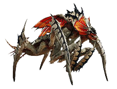
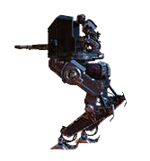
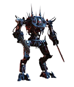
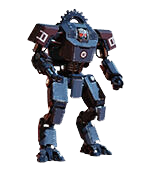

Enemigos
Terminidos
Carroñero

Bicho que lanza alaridos y atrae a otras criaturas cercanas. Muy débil a cualquier arma
Guerrero
Bicho furioso con caparazón blindado listo para el cuerpo a cuerpo. Las partes blandas debajo de su cuerpo son débiles a escopetas y armas perforantes
Cazador
Ágiles y capaces de esquivar el fuego enemigo. Débiles a cualquier arma, sobre todo a las mas rápidas y las incendiarias
Acechador
Peligroso bicho con la capacidad de hacerse invisible. Inutiliza a su invisibilidad con humo o pisando huevos con nubes de esporas
Regurgidtador de bilis

Bicho con torax hinchado y lleno de acido corrosivo listos para vomitar. Apunta a sus espalda y sus torax para acabar rápidamente con el
Titan de bilis

Una cepa de tamaño enorme y mucha fuerza. Débil frente a armamento pesado y explosivo, su parte inferior de color verde es su gran punto debil
Cargador
Embestidores con un exoesqueleto muy grueso y blindado. Las partes amarillas de su cuerpo son los puntos débiles y es débil frente a armas antitanque, explosivos y escopetas
Comandante de nido

Cepa rara y letal blindada que comanda sus congéneres con una mezcla de esporas y alaridos. Débil frente a estratagemas orbitales, ataques de águila y centinelas
Automatas
Incursor
Soldados básicos fusionados con ametralladoras y lanzacohetes. Débiles a cualquier tipo de arma, los disparos en la cabeza pueden matarlos de un impacto
Comisario
Cobarde, rápido y con una subrutina de mando rudimentaria. Débiles a cualquier tipo de arma
Caminante explorador
Una torreta andante guiada por un soldado. Débiles frente a armas perforantes, dispara a las piernas para derribarlo rápidamente y busca su espalda para disparar al soldado, es un gran punto débil
Berserker
Maquina con moto sierra que ataca en el cuerpo a cuerpo. La cabeza y la parte del estomago son sus puntos débiles, destroza sus brazos o sus piernas con escopetas y armas perforantes
Devastador
Acorazado con cañones, escudos, ametralladoras y lanzacohetes. Los disparos en la cabeza son lo mas efectivo contra ellos, no olvides usar escopetas para el blindaje o armas pesadas, cualquier explosivo te sera útil
Bruto
Lento y pesado, pero con gran potencia de fuego. Su punto débil se encuentra en la parte posterior, puedes sobrecalentarlo así le disparas continuadamente ahí hasta que explote, las estratagemas de ataques orbitales son muy efectivas y el cañón automático podría destruir su armadura
tanque
Vehículo militar fuertemente blindado con cañones y ametralladoras pesadas. La mayoría de ataques aéreos y orbitales te permiten destruirlo, un soldado del equipo puede hacer de señuelo mientras los demás lo atacan con estratagemas